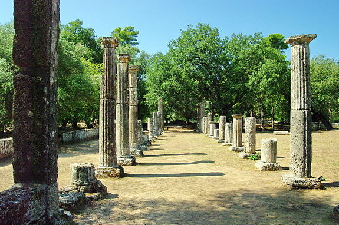
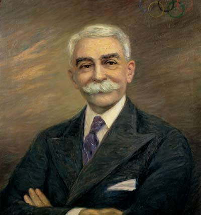
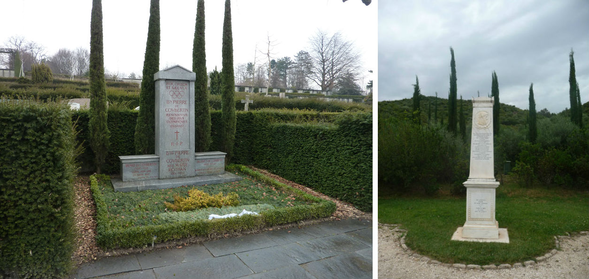
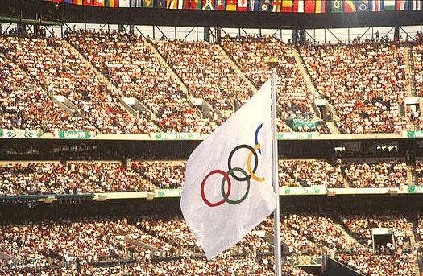

Содержание

- Предисловие
- Античные Олимпийские игры
- Возрождение Олимпийских игр
- Олимпийские игры и традиции
Олимпи́йские и́гры (фр. Jeux olympiques, англ. Olympic Games) — крупнейшие международные комплексные спортивные соревнования современности, которые проводятся каждые 4 года под эгидой Международного олимпийского комитета (МОК). Медаль, завоёванная на Олимпийских играх, считается одним из наивысших достижений в спорте. Традиция проведения Олимпийских игр, существовавшая в Древней Греции, зародилась как часть религиозного культа. Античные Олимпийские игры проводились в Олимпии, считавшейся у греков священным местом. От Олимпии произошло и название игр. В конце XIX века традиция была возрождена французским общественным деятелем Пьером де Кубертеном. Олимпийские игры, известные также как Летние Олимпийские игры, проводились каждые 4 года, начиная с 1896, за исключением лет, пришедшихся на мировые войны. В 1924 году были учреждены Зимние Олимпийские игры, которые первоначально проводились в тот же год, что и летние. Однако, начиная с 1994 время проведения зимних Олимпийских игр сдвинуто на два года относительно времени проведения летних игр. Спустя несколько дней после проведения Олимпийских игр на тех же спортивных сооружениях принимают Паралимпийские игры для людей с ограниченными возможностями.
Существует множество легенд и мифов о том, как зародились древние олимпиады. Самая известная легенда гласит о том, что Древнегреческий царь Ифит, желая прекратить бесконечные войны, несущие разорение и несчастья его стране и народу отправился в Дельфы. Там в храме Аполлона он получил повеление Богов, устроить всеобщие атлетические празднества кои им угодны. После этого царь Ифит, спартанский правитель Ликург и афинский реформатор и законодатель Клеосфен, заключили Божественный союз и установили порядок их проведения. Местность Олимпия, где должны были проходить игры, была объявлена священной, на территорию которой был запрещен вход любому вооруженному человеку. Нарушителя ждала смерть. На время проведения соревнований прекращались все войны. Периодичность празднества устанавливалась в 1417 дней. Данная периодичность сохраняется и сейчас.
Кто же мог выступать на олимпийских играх? Только мужчины и только греки. Интересно, что Александр Македонский (а был он, как известно, царём Македонии) пожелал принять участие в состязаниях. Но греки долго не хотели допускать чужестранца к участию в играх. В конечном итоге судьи признали его эллинское происхождение, и Александр Македонский принял участие в беге. Как выступил знаменитый царь и полководец, история умалчивает. А ещё в Олимпийских играх принимали участие такие известные люди, как философ Сократ и математик Пифагор. Виды спорта, в которых соревновались древние олимпийцы, несильно отличались от современных. Спортсмены принимали участие в беге, борьбе, рукопашном бое, состязаниях на колеснице, пятиборье. Пятиборье включало в себя бег, метание копья, метание диска, прыжки в длину и борьбу. Участники Олимпийских игр были обязаны выступать во всех без исключения соревнованиях. Победители спортивных состязаний были в Греции одними из самых уважаемых людей. В их честь слагали песни, а портреты чеканили на монетах. Но постепенно традиция проведения Олимпийских игр пришла в упадок.
Историю древних олимпийских игр принято отсчитывать от 776 года до новой эры, когда впервые в Олимпии был установлен памятник победителю соревнований. Олимпийские игры проводились на протяжении более 11 веков до 394 года новой эры, когда были запрещены римским императором Феодосием I, который проводил политику насильственного насаждения Христианства и всячески боролся со всем что было связано с культом древнегреческих Богов. Греция к тому времени уже несколько столетий находилась под властью Римской империи. За всю историю древних игр, состязания прошли 293 раза.
Олимпийская идея и после запрета античных состязаний не исчезла насовсем. Например, в Англии в течение XVII века неоднократно проводили «олимпийские» соревнования и состязания. Позже похожие соревнования организовывали во Франции и Греции. Тем не менее, это были небольшие мероприятия, носившие, в лучшем случае, региональный характер. В то время в Европе были в моде романтическо-идеалистические представления об античности. Желание возродить олимпийское мышление и культуру распространили довольно быстро по всей Европе. Дополнительным толчком к этому послужили грандиозные археологические раскопки под руководством немецкого археолога Эрнста Курциуса. Он раскопал руины стадиона, храмов Зевса, Геры и другие памятники античной столицы. Благодаря усилиям ученого для посетителей был открыт один из интереснейших археологических заповедников Европы, а педагог, общественный и спортивный деятель Пьер де Кубертен получил дополнительный аргумент к давно вынашиваемой им идее о возрождении истории Олимпийских игр, но уже во всемирном масштабе. Пьер де Кубертен, осмысливая впоследствии вклад Франции, сказал: «Германия раскопала то, что осталось от древней Олимпии. Почему Франция не может восстановить старое величие?». По мнению Кубертена, именно слабое физическое состояние французских солдат стало одной из причин поражения французов во Франко-прусской войне 1870—1871. Он стремился изменить положение с помощью улучшения физической культуры французов. Одновременно с этим, он хотел преодолеть национальный эгоизм и внести вклад в борьбу за мир и международное взаимопонимание. Поэтому девиз «новых» Олимпийских игр звучал так: «Молодежь мира должна была мериться силами в спортивных состязаниях, а не на полях битв». Основной идеей возрождения игр стала идея всеобщего перемирия на время проведения соревнований. Возрождение Олимпийских игр казалось в его глазах лучшим решением, чтобы достичь всех этих целей.
Будучи главой Союза спортивных ассоциаций Франции он провел огромную подготовительную работу, проведя множество встреч, с королями, президентами и премьер министрами множества стран. На конгрессе, проведённом 16-23 июня 1894 года в Сорбонне (Парижский университет), он представил свои мысли и идеи международной публике. Парижский конгресс 1892 стал настоящим триумфом Пьера де Кубертена и дал старт началу новой истории Олимпийских игр во всем мире. 23 июня 1894 года год был создан Международный олимпийский комитет (МОК) в котором де Кубертен занял пост генерального секретаря. Президентом был избран Деметриус Викелас - друг и соратник Кубертена в деле возрождения Олимпийского движения. В последний день конгресса было принято решение о том, что первые Олимпийские игры современности должны состояться в 1896 году в Афинах, стране-родоначальнице Игр — Греции. Чтобы организовать проведение Игр, был основан Международный олимпийский комитет (МОК).
Первые Игры современности прошли с большим успехом. Несмотря на то, что участие в Играх принял всего 241 атлет (14 стран), Игры стали крупнейшим спортивным событием, прошедшим когда-либо со времён Древней Греции. Спортсмены состязались всего в девяти видах спорта. Интересно, что в начале XX века олимпийцы соревновались в перетягивании каната. Греческие официальные лица были так довольны, что выдвинули предложение о «вечном» проведении Игр Олимпиады на их родине, в Греции. Но МОК ввёл ротацию между разными государствами, чтобы каждые 4 года Игры меняли место проведения. Пьер де Кубертен возглавлял МОК до 1924 года и оставался его почетным президентом до самой своей смерти в 1937 году. Он скончался в Женеве, Швейцария, похоронен в Лозанне, городе где находится штаб квартира МОК. Согласно его завещанию, сердце Пьера де Кубертена захоронено в Олимпии месте, откуда началась история Олимпийских игр.
Символ Олимпийских игр — олимпийские кольца, пять скреплённых колец, символизирующих объединение пяти обитаемых частей света в олимпийском движении. Вопреки распространённой версии, каждое из колец не относится к какому-то конкретному континенту.
Олимпийское движение имеет свои эмблему и флаг, утверждённые МОК по предложению Кубертена в 1913. Эмблема — олимпийские кольца. Девиз — Citius, Altius, Fortius — Communis (лат. «быстрее, выше, сильнее — вместе»). Флаг — белое полотнище с олимпийскими кольцами, поднимается на всех Играх, начиная с VII Олимпийских игр 1920 года в Антверпене (Бельгия), где также впервые стала даваться олимпийская клятва.
Парад национальных команд под флагами при открытии Игр проводится начиная c IV Олимпийских игр 1908 года в Лондоне (Великобритания). С Олимпиады-1936 в Берлине (Германия) проводится эстафета олимпийского огня. Олимпийские талисманы впервые появились на летних и зимних Играх 1968 года на Олимпиаде в Гренобле (Франция). Обычно он изображается в виде животного, ассоциирующегося со страной-организатором.